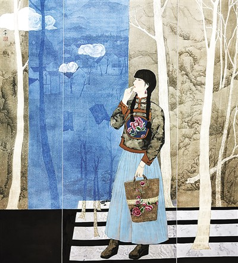

由中国美术家协会主办的“中国美术世界行暨海外研修工程成果汇报展”日前在北京炎黄艺术馆举行。130件中外美术佳作集体亮相，全面梳理回顾十余年来中国美协实施“中国美术世界行”“中国中青年美术家海外研修工程”等对外美术交流品牌项目的成果，多角度描绘中外神奇绚丽的自然与人文景观。
本次展览作品涵盖中国画、油画、版画、雕塑、水彩、综合材料等诸多画种，共分为五大板块：“中国美术世界行十周年”呈现历年来深受世界各国观众热捧的人气佳作；“中国中青年美术家海外研修工程十周年”展示近年来海外研修创作人员创作的心路历程与成果；“中国美术家眼中的世界”描绘艺术家眼中的世界；“中外画家共绘中国美丽乡村”讲述中国乡村脱贫攻坚、全面建成小康社会的动人故事；“香港画家画香港”展现香港“一国两制”发展成就，抒发爱国爱港心声。
中国美术家协会主席范迪安表示，中国美术的优良传统体现在两方面：一方面是中国美术家立足本土，感受时代生活，用丹青画卷描绘今日中国的发展和进步，表现中外人民携手推动世界和平发展的坚定信念；另一方面，中国美术家们秉持开阔的胸怀，期待与世界各国美术家广泛交往。
自2009年立项至今，“中国美术世界行”已在五大洲近50个主要国家和城市的专业场馆，共展出中国当代美术作品2000余件次；同年立项的“中国中青年美术家海外研修工程”迄今已成功实施十一届，共资助100余位中青年美术家走出国门开展研修交流。
湖南文化产业网版权所有 (c) All Rights Reserved.
未经湖南文化产业网书面特别授权，请勿转载或建立镜像